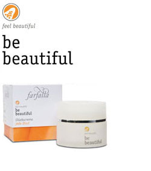

be beautiful
Kauneus- ja hyvinvointituotteet
1. Antaa kasvojen iholle “vastarakastuneen” hehkun.
2. Elvyttää ihoa stressaavissa tilanteissa.
3. Suojaa ympäristön haitallisilta vaikutuksilta.
4. Hohtavat mineraalihiukkaset peittävät pieniä epäpuhtauksia ja juonteita.
Tehokkaat, vaikuttavat aineosat
Orinoco -pähkinä ja brasilialainen pippuripuuOrinoco –pähkinässä on runsaasti hyvälaatuisia Omega-3 –rasvahappoja. Sillä ja brasilialaisella pippuripuulla on onnellisuushormoni dopamiinin erittymistä edistävä vaikutus. Muiden hyvien vaikutustensa lisäksi dopamiini parantaa verenkiertoa –näytät hehkeältä ja vastarakastuneelta! Loistava apu silloin kun ihosi tarvitsee erityistä huolenpitoa: esiintymistilanteisiin, stressaaviin hetkiin kiireisen työrupeaman keskellä, matkoille.
Hohtavat mineraalihiukkaset
Luonnonmineraalien himmeästi ja luonnollisesti hohtavat hiukkaset peittävät ihon pieniä virheitä ja pintaryppyjä
Luonnolliset, syvävaikutteiset eteeriset öljyt
Vaniljan, kookoksen ja bergamotin eteeriset öljyt edistävät be beautiful -tuotteiden tehokkaiden ainesosien vaikutuksia ja "onnellisuusefektiä".
Bliss Cream
Bliss Cream on ainutlaatuinen kauneusvoide. Se saa sinut tuntemaan itsesi valmiiksi juhlaan ja sädehtimään! Bliss Creamin luomulaatuiset raaka-aineet lisäävät onnellisuushormonina tunnetun dopamiinin erittymistä. Tunnet olosi hyväksi ja virkeäksi - näytät upealta! Dopamiini myös parantaa verenkiertoa ja tuo kasvoille luonnollisen ja kauniin heleyden. Voide sisältää luonnonmineraalien himmeästi hohtavia hiukkasia, jotka peittävät ihon pieniä virheitä ja pintaryppyjä. Täydellinen voide käytettäväksi ennen tärkeää juhlaa, tapaamista, kokousta, esiintymistä, vaativaa työpäivää... aina kun sitä tarvitset.
100% luonnollisista aineista.
95% sertifioitavissa olevista ainesosista luomua.
95% sertifioitavissa olevista ainesosista luomua.
Vegan
